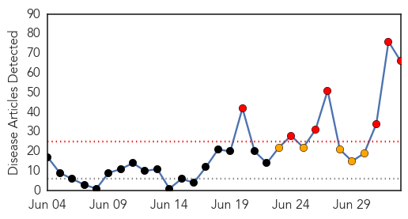
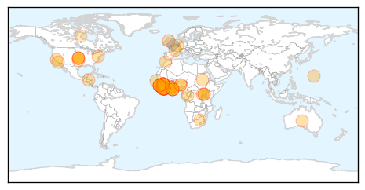

Ebola
30-Day Web Trend
7 alerts, 5 warnings

30-Day Twitter Trend
4 alerts, 0 warnings
Article Locations
Article Confidences
Top Articles:
- 1.000
- Why Don't West Africans Believe Ebola Is Real?
- 1.000
- As Ebola Cases Spike, WHO Asks For More Money And Help : Shots
- 1.000
- A Race Against Time: West Africa Fears Further Outbreaks of Ebola
- 1.000
- Emergency Ministerial Meeting On Ebola Opens In Accra, Ghana
- 1.000
- W. African Ebola epidemic 'likely to last months', says UN
- 1.000
- What is Ebola and how is it spread?
- 1.000
- Ebola Is 'Out Of Control' Across West Africa
- 1.000
- Red Cross suspends Ebola operations in southeast Guinea after threats
- 1.000
- Your guide to the West African Ebola outbreak
- 1.000
- Ebola virus: Can nations stop deadliest ever outbreak from spreading?
- 1.000
- West Africa to Step Up Efforts to Combat Ebola Outbreak
- 1.000
- Ebola outbreak: West African states agree strategy
- 1.000
- Ebola a Potential Epidemic.
- 1.000
- Stopping deadly virus from spreading further difficult
- 1.000
- Fear and ignorance as ebola out of control in parts of west Africa
- 1.000
- Officials: ‘Drastic action’ needed in worst ever Ebola outbreak; nearly 500 dead
- 1.000
- 'Drastic Action' Needed in Worst Ever Ebola Outbreak; Nearly 500 Dead
- 1.000
- Resources dampen fight against Ebola
- 1.000
- Deadliest ever outbreak of Ebola virus: What to know
- 0.999
- Ebola toll jumps to 467 as ministers mull response
- 0.999
- Lack Of Resources Worsening West African Ebola Outbreak
- 0.999
- WHO: Some African cultural practices inhibit action against Ebola virus
- 0.999
- Debate Rages on Action to halt W. African Ebola Epidemic — Naharnet
- 0.999
- Ugandan doctor dies of Ebola fever in Liberia
- 0.999
- Health Ministers Agree On Priority Actions To End Ebola Outbreak In West Africa
- 0.999
- Legalbrief Today Home Page
- 0.999
- Health Ministers agree on priority actions to end Ebola outbreak in West Africa
- 0.999
- Experimental Ebola drugs should be tried in Africa, disease expert says
- 0.999
- Some cultural practices encourage spread of Ebola WHO leader says
- 0.999
- Health Ministers agree on priority actions to end Ebola outbreak in West Africa - WHO
- 0.999
- U.S. Government Donates Personal Protective Equipment to Support the Response to the Ebola Outbreak - Liberia
- 0.999
- UPDATE 2-Ebola toll jumps to 467 as ministers mull response
- 0.998
- Ebola Outbreak Highlights Lack of Medications
- 0.998
- As Ebola virus spreads in West Africa, some blame health workers
- 0.998
- U.N. seeks to calm Ebola fears in W. Africa
- 0.998
- Fear, cash shortages hinder fight against Ebola outbreak
- 0.998
- Priority actions needed to end West Africa Ebola outbreak
- 0.998
- Outbreak of Ebola Virus Disease requires a strong response on healthcare in europe
- 0.997
- WHO For Urgent Action To Contain Ebola Outbreak In West Africa
- 0.997
- West African authorities adopt common strategy to fight Ebola
- 0.997
- WHO considers emergency action on Ebola outbreak
- 0.997
- Ebola outbreak: WHO calls for ‘drastic action’ to halt spread of the virus across West Africa
- 0.997
- Fear, cash shortages hinder fight against Ebola outbreak
- 0.997
- Fear, cash shortages hinder fight against Ebola outbreak
- 0.997
- Record Ebola Outbreak 'Out of Control'
- 0.997
- Fear And Ignorance As Ebola Death Toll Rises To 467 In Parts Of West Africa
- 0.997
- Ebola: Shattering lives in Sierra Leone
- 0.997
- 3 July 2014: West Africa - Ebola Virus Disease (EVD) Outbreak - Sierra Leone
- 0.996
- W Africa ministers hold emergency #Ebola talks
- 0.996
- Fear and cash shortages hinder fight against Ebola outbreak
Showing top 50 articles...
Top Tweets:
- 0.896
- RT: As of 30 June 2014, 759 number of Ebola virus disease (EVD) cases, including 467 deaths; see ECDC's latest update http://t.co/…
Influenza
30-Day Web Trend
0 alerts, 0 warnings

30-Day Twitter Trend
4 alerts, 0 warnings

Article Locations

Article Confidences

Top Articles:
- 0.999
- Novartis begins shipment of seasonal influenza vaccines to US market for the 2014-2015 season
- 0.998
- Scientists Have Developed a Flu Strain Capable of Evading Your Immune System
- 0.988
- UN: MERS deadly but most cases are preventable
- 0.987
- Health And Family, Lifestyle Features, The Philippine Star
- 0.987
- World Health Organization says most MERS cases are preventable, virus infection rates slowing
Top Tweets:
-
No tweets found for Jul 03, 2014